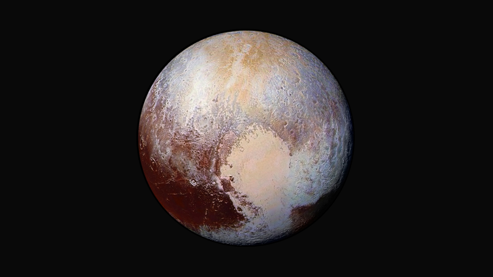
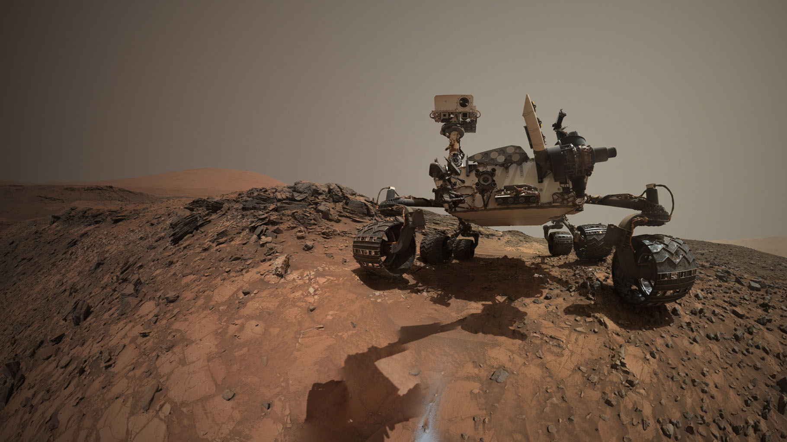
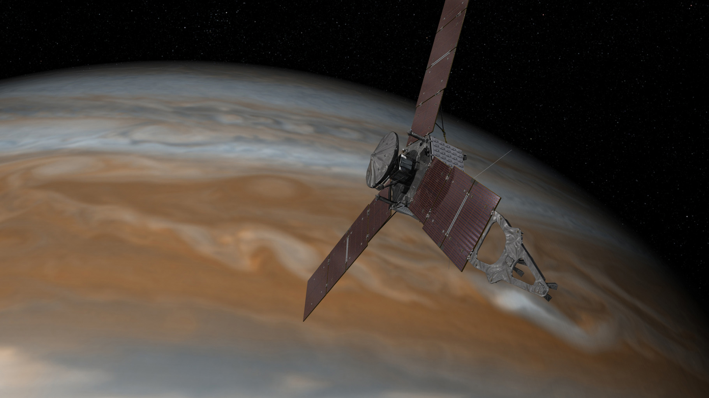

Why Explore the Unknown?
Humanity has reached an exponential amount of success in all areas of modern-day society. It is up to us and the upcoming generations to continue pushing ourselves past our limits. Interplanetary travel is the next step in creating a truly impressive species. To do so, we must terraform selected planets in our solar system that can be made capable of sustaining the human species. Although terraforming and interplanetary travel seems very far off, it will soon be possible for us to book a flight to Mars. This is not something to fear of, but something to look forward to. The benefits of an interplanetary species are more than impressive. How will we ever know what else is out there if we never make the first steps?
My biggest role model in life, Elon Musk, shares a similiar understanding for the reasons to explore the unknown. He has created a massive global interest in space travel and continues to impress his supporters. Along with SpaceX, both Blue Origin and Virgin Galactic are making the first steps in normalizing space travel. The American private aerospace sector has grown exponentially within the last decade and will continue to do so, as long as the interest remains. The goal of this webpage is to highlight just how far these companies are willing to push themselves, and how far they have already come.
Featured Images



